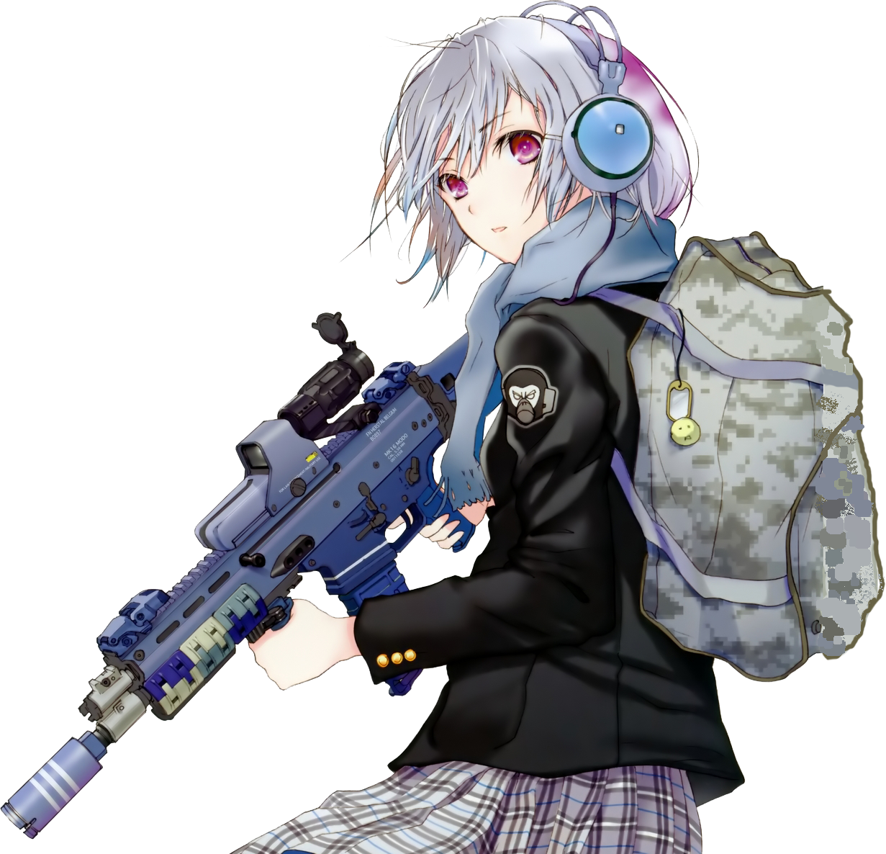

Multi~skins en una página de skins! (wow)
No es necesario seguir andando con tus armas en default, podés tunearlas todo lo que quieras a bajo precio, o gastarte medio sueldo en un cuchillito. Vos elegís.
Los links son funcionales y llevan a su correspondiente página del mercado de Steam para comprarlas con dinero real.
PAYDAY 2 es un juego de acción cooperativo que, una vez más, permite a los jugadores ponerse en la piel del equipo original de PAYDAY mientras descienden por Washington DC en una épica ola de crímenes.
Hasta cuatro amigos cooperan en los golpes y, a medida que el equipo avanza, los trabajos se hacen más grandes, mejores y más gratificantes. Además de ganar más dinero y convertirse en un criminal legendario, existe un sistema de personalización y creación de personajes que permite a los equipos construir y personalizar sus propias armas y equipamiento.
Counter-Strike: Global Offensive (CS:GO) amplía el juego de acción por equipos del que fue pionero cuando salió hace más de 20 años. CS:GO incluye nuevos mapas, personajes, armas y modos de juego, y ofrece versiones actualizadas del contenido clásico de Counter-Strike (de_dust2, etc.).
Nueve clases diferentes ofrecen una amplia variedad de habilidades tácticas y personalidades. Constantemente actualizado (en realidad no) con nuevos modos de juego, mapas, equipamiento y, lo que es más importante, ¡sombreros!
Personaliza tu clase favorita para ajustarla a tu forma de jugar y a tu gusto personal. No necesitas pagar para conseguirlos, prácticamente todos los objetos de la Tienda Mann Co. pueden obtenerse mientras juegas.